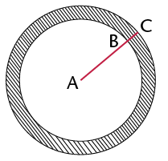

The decimal notation for fractions
In this chapter you will learn more about decimal fractions and how they relate to common fractions and percentages. You will also learn to order and compare decimal fractions, and how to calculate with decimal fractions.
Other symbols for tenths and hundredths
Tenths and hundredths again...
-
-
What part of the rectangle below is coloured yellow?
-
What part of the rectangle is red? What part is blue? What part is green, and what part is not coloured?
0,1 is another way to write \(\frac{1}{10}\) and
\(0,01\) is another way to write \(\frac{1}{100}\).
\(0,1\) and \(\frac{1}{10}\) are different notations for the same number.
\(\frac{1}{10}\) is called the (common) fraction notation
and \(0,1\) is called the decimal notation.
-
-
Write the answers for 1(a) and (b) in decimal notation.
-
3 tenths and 7 hundredths of a rectangle is coloured red, and 2 tenths and 6 hundredths of the rectangle is coloured brown. What part of the rectangle (how many tenths and how many hundredths) is not coloured? Write your answer in fraction notation and in decimal notation.
-
On Monday, Steve ate 3 tenths and 7 hundredths of a strip of licorice. On Tuesday, Steve ate 2 tenths and 5 hundredths of a strip of licorice. How much licorice did he eat on Monday and Tuesday together? Write your answer in fraction notation and in decimal notation.
-
Lebogang's answer for question 4 is 5 tenths and 12 hundredths. Susan's answer is 6 tenths and 2 hundredths. Who is right, or are they both wrong?
The same quantity can be expressed in different ways in tenths and hundredths.
For example, 3 tenths and 17 hundredths can be expressed as 2 tenths and 27 hundredths or 4 tenths and 7 hundredths.
All over the world, people have agreed to keep the number of hundredths in such statements below 10. This means that the normal way of expressing the above quantity is 4 tenths and 7 hundredths.
Written in decimal notation, 4 tenths and 7 hundredths is 0,47. This is read as nought comma four seven and NOT nought comma forty-seven.
-
What is the decimal notation for each of the following numbers?
- \(3\frac{7}{10}\)
- \(4\frac{19}{100}\)
- \(\frac{47}{10}\)
- \(\frac{3}{100}\)
- \(3\frac{7}{10}\)
... and thousandths
\(0,001\) is another way of writing \(\frac{1}{1000}\).
-
What is the decimal notation for each of the following?
- \(\frac{7}{1000}\)
- \(\frac{9}{1000}\)
- \(\frac{147}{1000}\)
- \(\frac{999}{1000}\)
- \(\frac{7}{1000}\)
-
Write the following numbers in the decimal notation:
- \(2+\frac{3}{10} + \frac{7}{100} + \frac{4}{1000}\)
- \(12 + \frac{1}{10} + \frac{4}{1000}\)
- \(2 + \frac{4}{1000}\)
- \(67\frac{123}{1000}\)
- \(34\frac{61}{1000}\)
- \(654\frac{3}{1000}\)
- \(2+\frac{3}{10} + \frac{7}{100} + \frac{4}{1000}\)
Percentages and decimal fractions
Hundredths, percentages and decimals
-
The rectangle below is divided into small parts.

-
How many of these small parts are there in the rectangle? And in one tenth of the rectangle?
-
What part of the rectangle is blue? What part is green? What part is red?
Instead of 6 hundredths, you may say 6 per cent. It means the same.
10 per cent of the rectangle above is yellow.
-
-
Use the word "per cent" to say what part of the rectangle is green. What part is red?
-
What percentage of the rectangle is blue? What percentage is white?
We do not say: "How many per cent of the rectangle is green?" We say: "What percentage of the rectangle is green?"
The symbol % is used for "per cent".
Instead of writing "17 per cent", you may write 17%.
Per cent means hundredths. The symbol % is a bit like the symbol \(\frac{}{100}\)
-
-
How much is 1% of R400? (In other words: How much is \(\frac{1}{100}\) or 0,01 of R400?)
-
How much is 37% of R400?
-
How much is 37% of R700?
-
-
-
25 apples are shared equally between 100 people. How much apple does each person get? Write your answer as a common fraction and as a decimal fraction.
-
How much is 1% (one hundredth) of 25?
-
How much is 8% of 25?
-
How much is 8% of 50? And how much is 0,08 of 50?
0,37 and 37% and \(\frac{37}{100}\) are different symbols for the same thing: 37 hundredths.
-
-
Express each of the following in three ways:
- in the decimal notation,
- in the percentage notation and
- if possible, in the common fraction notation, using hundredths.
-
3 tenths
7 hundredths
-
37 hundredths
-
7 tenths
-
3 quarters
-
7 eighths
-
-
How much is 3 tenths of R200 and 7 hundredths of R200 altogether?
-
How much is \(\frac{37}{100}\) of R200?
-
How much is 0,37 of R200?
-
And how much is 37% of R200?
-
-
Express each of the following in three ways:
- in the decimal notation,
- in the percentage notation and
- in the common fraction notation, using hundredths.
-
20 hundredths
-
50 hundredths
-
25 hundredths
-
75 hundredths
-
Jan eats a quarter of a watermelon. What percentage of the watermelon is this?
-
Sibu drinks 75% of the milk in a bottle. What fraction of the milk is this?
-
Jeminah uses 0,75 (7 tenths and 5 hundredths) of the paint in a tin. What percentage of the paint does she use?
-
-
The floor of a large room is shown below. What part of the floor is covered in each of the four colours? Express your answer in four ways:
-
in the common fraction notation, using hundredths,
-
in the decimal notation,
-
in the percentage notation, and
-
if possible, in the common fraction notation, as tenths and hundredths (for example \(\frac{3}{10} + \frac{4}{100}\)) .

(a)
(b)
(c)
(d)
white
red
yellow
black
-
Decimal measurements
Measuring on a number line
-
Read the lengths at the marked points (A to D) on the number lines. Give your answers as accurate as possible in decimal notation.
-
-
Show the following numbers on the number line below:
- 0,6
- 1,2
- 1,85
- 2,3
- 2,65
- 3,05
- 0,08

-
Show the following numbers on the number line below:
- 3,06
- 3,08
- 3,015
- 3,047
- 3,005


More decimal concepts
Decimal jumps
-
Write the next ten numbers in the number sequences and show your number sequences, as far as possible, on the number lines.
-
0,2; 0,4; 0,6;
-

-
How many 0,2s are there in 1?
-
Write 0,2 as a common fraction.
-
-
0,3; 0,6; 0,9;
-
-
How many 0,3s are there in 3?
-
Write 0,3 as a common fraction.
-
-
0,25; 0,5;
-

-
How many 0,25s are there in 1?
-
Write 0,25 as a common fraction.
A calculator can be programmed to do the same operation over and over again.
For example, press 0,1 \(+\) \(=\) (do not press CLEAR or any other operation). Press the \(=\) key repeatedly and see what happens.The calculator counts in 0,1s.
-
-
You can check your answers for questions 1 to 3 with a calculator. Program the calculator to help you.
-
Write the next five numbers in the number sequences:
9,3; 9,2; 9,1;
0,15; 0,14; 0,13; 0,12;
-
Check your answers with a calculator. Program the calculator to help you.
Place value
-
Write each of the following as one number:
- 2 + 0,5 + 0,07
- 2 + 0,5 + 0,007
- 2 + 0,05 + 0,007
- 5 + 0,4 + 0,03 + 0,001
- 5 + 0,04 + 0,003 + 0,1
- 5 + 0,004 +
0,3 + 0,01
- 2 + 0,5 + 0,07
We can write 3,784 in expanded notation as 3,784 = 3 + 0,7 + 0,08 + 0,004.We can also name these parts as follows:
- the 3 represents the units
- the 7 represents the tenths
- the 8 represents the hundredths
- the 4 represents the thousandths
We say: the value of the 7 is 7 tenths but the place value of the 7 is tenths, because any digit in that place will represent the number of tenths.
or example, in 2,536 the value of the 3 is 0,03, and its place value is hundredths, because the value of the place where it stands is hundredths.
-
Now write the value (in decimal fractions) and the place value of each of the underlined digits.
- 2,345
- 4,678
- 1,953
- 34,856
- 564,34
- 0,987
- 2,345
Ordering and comparing decimal fractions
From biggest to smallest and smallest to biggest
-
Order the following numbers from biggest to smallest. Explain your method.
0,8; 0,05; 0,5; 0,15; 0,465; 0,55; 0,75; 0,4; 0,62
-
Below are the results of some of the 2012 London Olympic events. In each case, order them from first to last place. Use the column provided.
-
Women: Long jump - Final
Name
Country
Distance
Place
Anna Nazarova
RUS
6,77 m
Brittney Reese
USA
7,12 m
Elena Sokolova
RUS
7,07 m
Ineta Radevica
LAT
6,88 m
Janay DeLoach
USA
6,89 m
3rd
Lyudmila Kolchanova
RUS
6,76 m
-
Women: 400 m hurdles - Final
Name
Country
Time
Place
Georganne Moline
USA
53,92 s
Kaliese Spencer
JAM
53,66 s
4th
Lashinda Demus
USA
52,77 s
Natalya Antyukh
RUS
52,70 s
T'erea Brown
USA
55,07 s
Zuzana Hejnová
CZE
53,38 s
-
Men: 110 m hurdles - Final
Name
Country
Time
Place
Aries Merritt
USA
12,92 s
Hansle Parchment
JAM
13,12 s
Jason Richardson
USA
13,04 s
Lawrence Clarke
GBR
13,39 s
Orlando Ortega
CUB
13,43 s
Ryan Brathwaite
BAR
13,40 s
-
Men: Javelin - Final
Name
Country
Distance
Place
Andreas Thorkildsen
NOR
82,63 m
Antti Ruuskanen
FIN
84,12 m
Keshorn Walcott
TRI
84,58 m
Oleksandr Pyatnytsya
UKR
84,51 m
Tero Pitkämäki
FIN
82,80 m
Vítezslav Veselý
CZE
83,34 m
-
-
In each case, give a number that falls between the two numbers.(This means you may give any number that falls anywhere between the two numbers.)
-
3,5 and 3,7
- 3,9 and 3,11
- 3,1 and 3,2
-
3,5 and 3,7
-
How many numbers are there between 3,1 and 3,2?
-
Fill in <, > or =.
- 0,4 ☐ 0,52
- 0,4 ☐ 0,32
- 2,61 ☐ 2,7
- 2,4 ☐ 2,40
- 2,34 ☐ 2,567
- 2,34 ☐ 2,251
Rounding off
Just as whole numbers can be rounded off to the nearest 10, 100 or 1 000, decimal fractions can be rounded off to the nearest whole number or to one, two, three etc. digits after the comma. A decimal fraction is rounded off to the number whose value is closest to it. Therefore 13,24 rounded off to one decimal place is 13,2 and 13,26 rounded off to one decimal place is 13,3. A decimal ending in a 5 is an equal distance from the two numbers to which it can be rounded off. Such decimals are rounded off to the biggest number, so 13,15 rounded off to one decimal place becomes 13,2.
Saying it nearly but not quite
-
Round each of the following numbers off to the nearest whole number:
7,6; 18,3; 204,5; 1,89; 0,9; 34,7; 11,5; 0,65
-
Round each of the following numbers off to one decimal place:
7,68; 18,93; 21,47; 0,643; 0,938; 1,44; 3,81
-
Round each of the following numbers off to two decimal places:
3,432; 54,117; 4,809; 3,762; 4,258; 10,222; 9,365; 299,996
Round off to help you calculate
-
John and three of his brothers sell an old bicycle for R44,65. How can the brothers share the money fairly?
-
A man buys 3,75 m of wood at R11,99 per metre. What does the wood cost him?
-
Estimate the answers of each of the following by rounding off the numbers:
- \(89,3 \times 3,8\)
- \(227,3 + 71,8 - 28,6\)
- \(89,3 \times 3,8\)
Addition and subtraction with decimal fractions
Mental calculations
-
Complete the number chain.

When you add or subtract decimal fractions, you can change them to common fractions to make the calculation easier.
\(0,4 + 0,5 \\ = \frac{4}{10} + \frac{5}{10} \\ = \frac{9}{10} \\ = 0,9\)
-
Calculate each of the following:
- \(0,7 + 0,2\)
- \(0,7 + 0,4\)
- \(1,3 + 0,8\)
- \(1,35 + 0,8\)
- \(0,25 + 0,7\)
- \(0,25 + 0,07\)
- \(3 - 0,1\)
- \(3 - 0,01\)
- \(2,4 - 0,5\)
- \(0,7 + 0,2\)
Some real-life problems
-
The owner of an internet café looks at her bank statement at the end of the day. She finds the following amounts paid into her account: R281,45; R39,81; R104,54 and R9,80. How much money was paid into her account on that day?
-
At the beginning of a journey the odometer in a car reads: 21589,4. At the end of the journey the odometer reads: 21763,7. What distance was covered?
-
At an athletics competition, an athlete runs the 100 m race in 12,8 seconds. The announcer says that the athlete has broken the previous record by 0,4 seconds. What was the previous record?
-
In a surfing competition five judges give each contestant a mark out of 10. The highest and the lowest marks are ignored and the other three marks are totalled. Work out each contestant's score and place the contestants in order from first to last.
A: 7,5; 8; 7; 8,5; 7,7;
B: 8,5; 8,5; 9,1; 8,9; 8,7
C: 7,9; 8,1; 8,1; 7,8; 7,8;
D: 8,9; 8,7; 9; 9,3; 9,1
-
A pipe is measured accurately. AC = 14,80 mm and AB = 13,97 mm.
How thick is the pipe (BC)?
 -
Mrs Mdlankomo buys three packets of mincemeat. The packets weigh 0,356 kg, 1,201 kg and 0,978 kg respectively. What do they weigh together?
Multiplication and decimal fractions
The power of ten
-
-
Complete the multiplication table.
\(\times\)
1 000
100
10
1
0,1
0,01
0,001
6
6 000
60
0,06
6,4
640
0,5
0,05
4,78
4 780
47,8
41,2
41 200
-
Is it correct to say that "multiplication makes bigger"? When does multiplication make bigger?
-
Formulate rules for multiplying with 10; 100; 1 000; 0,1; 0,01 and 0,001. Can you explain the rules?
-
Now use your rules to calculate each of the following:
\(0,5 \times 10\)
\(0,3 \times 100\)
\(0,42 \times 10\)
\(0,675 \times 100\)
-
-
Complete the division table.
\(\div\)
0,001
0,01
0,1
1
10
100
1 000
6
6
0,6
0,06
6,4
64
6,4
0,5
0,005
4,78
47,8
41,2
4 120
-
Is it correct to say that "division makes smaller"? When does division make smaller?
-
Formulate rules for dividing with 10; 100; 1 000; 0,1; 0,01 and 0,001. Can you explain the rules?
-
Now use your rules to calculate each of the following:
\(0,5 \div 10\)
\(0,3 \div 100\)
\(0,42 \div 10\)
-
-
Complete the following:
-
Multiplying with 0,1 is the same as dividing by
-
Dividing by 0,1 is the same as multiplying by
Now discuss it with a partner or explain to him or her why this is so.
-
-
Fill in the missing numbers:

What does multiplying a decimal number with a whole number mean?
What does something like \(4 \times 0,5\) mean?
What does something like \(0,5 \times 4\) mean?
\(4 \times 0,5\) means 4 groups of \(\frac{1}{2}\), which is \(\frac{1}{2} + \frac{1}{2} + \frac{1}{2} + \frac{1}{2}\), which is 2.
\(0,5 \times 4\) means \(\frac{1}{2}\) of 4, which is 2.
A real-life example where we would find this is:
\[\begin{align} 6 \times 0,42 \text{ kg} &= 6 \times \frac{42}{100}\\ &=(6 \times 42) \div 100\\ & =252 \div 100\\ &= 2,52 \text{ kg} \end{align} \]
What really happens is that we convert \(6 \times 0,42\) to the product of two whole numbers, do the calculation and then convert the answer to a decimal fraction again (\(\div 100\)).
Multiplying decimals with whole numbers
-
Calculate each of the following. Use fraction notation to help you.
- \(0.3 \times 7\)
- \(0.21 \times 91\)
- \(8 \times 0.4\)
- \(0.3 \times 7\)
-
Estimate the answers to each of the following and then calculate:
- \(0,4 \times 7\)
- \(0,55 \times 7\)
- \(12 \times 0,12\)
- \(0,601 \times 2\)
- \(0,4 \times 7\)
-
Make a rule for multiplying with decimals. Explain your rule to a partner.
What does multiplying a decimal with a decimal mean?
For example, what does \(0,32 \times 0,87\) mean?
If you buy 0,32 m of ribbon and each metre costs R0,87, you can write it as \(0,32 \times 0,87\).
\[\begin{align} 0.32 \times 0.87 &= \frac{32}{100} \times \frac{87}{100} &\text{ [Write as common fractions]} \\ & = \frac{32 \times 87}{10000}& \text{ [Multiplication of two fractions]}\\ & =\frac{2784}{10000} &\text{ [The product of the whole numbers } 32 \times 87\text{]}\\ &=0.2784 &\text{ [Convert to a decimal by dividing the product by 10 000]} \end{align}\]
The product of two decimals is thus converted to the product of whole numbers and then converted back to a decimal.
The product of two decimals and the product of two whole numbers with the same digits differ only in terms of the place value of the products, in other words the position of the decimal comma. It can also be determined by estimating and checking.
Multiplying decimals with decimals
-
Calculate each of the following. Use fraction notation to help you.
- \(0,6 \times 0,4 \)
- \( 0,06 \times 0,4\)
- \( 0,06 \times 0,04\)
- \(0,6 \times 0,4 \)
Mandla uses this method to multiply decimals with decimals:
\[\begin{align} 0,84 \times 0,6 &= (84 \div 100) \times (6 \div 10) \\ & = (84 \times 6) \div (100 \times 10)\\ & = 504 \div 1 000\\ & = 0,504 \end{align}\]
-
Calculate the following using Mandla's method:
- \( 0,4 \times 0,7 \)
- \( 0,4 \times 7\)
- \( 0,04 \times 0,7\)
- \( 0,4 \times 0,7 \)
Division and decimal fractions
Look carefully at the following three methods of calculation:
-
\(0,6 \div 2 = 0,3 \text{ [6 tenths} \div 2 = 3 \text{ tenths]}\)
-
\[\begin{align}12,4 \div 4& = 3,1 &\text{ [(12 units } + 4 \text{ tenths}) \div 4\text{]}\\ & = (12 \text{ units} \div 4) + (4 \text{ tenths} \div 4)& \\ & = 3 \text{ units} + 1 \text{ tenth}&\\ & = 3,1&\end{align}\]
-
\[\begin{align} 2,8 \div 5 &= 28 \text{ tenths }\div 5&\\ &= 25 \text{ tenths } \div 5 \text{ and } 3 \text{ tenths }\div 5&\\ & = 5 \text{ tenths and }(3 \text{ tenths } \div 5) &\text{ [3 tenths cannot be divided by 5]} \\ &= 5 \text{ tenths and } (30 \text{ hundredths} \div 5) &\text{ [3 tenths = 30 hundredths]}\\ & = 5 \text{ tenths and } 6 \text{ hundredths}&\\ & = 0,56 &\end{align}\]
Dividing decimals by whole numbers
-
Complete.
- \[\begin{align} 8.4 \div 2 &= (8 \text{______} + 4 \text{ tenths}) \div 2\\ &= (8 \text{______} \div 2) + (\text{______})\\ &= 4\text{______} + \text{______ tenths}\\ &= \text{______} \end{align}\]
- \[\begin{align} 3.4 \div 4 & = (3 \text{ units} + 4 \text{ tenths}) \div 4\\ &= (32 \text{______} + 20 \text{______} \div 4\\ & =(\text{______} \div 4) + (\text{______} \div 4)\\ & = \text{______} + \text{______ hundredths}\\ & =\text{______} \end{align}\]
-
Calculate each of the following in the shortest possible way:
- \(0,08 \div 4 \)
- \( 14,4 \div 12\)
- \( 8,4 \div 7 \)
- \( 4,5 \div 15 \)
- \( 1,655 \div 5 \)
- \( 0,225 \div 25 \)
- \(0,08 \div 4 \)
-
A grocer buys 15 kg of bananas for R99,90. What do the bananas cost per kilogram?
-
Given \(26,8 \div 4 = 6,7\). Write down the answers to the following without calculating:
- \(268 \div 4\)
- \(0,268 \div 4 \)
- \( 26,8 \div 0,4\)
- \(268 \div 4\)
-
Given \(128 \div 8 = 16\). Write down the answers to the following without calculating:
- \( 12,8 \div 8 \)
- \( 1,28 \div 8\)
- \( 1,28 \div 0,8 \)
- \( 12,8 \div 8 \)
-
Sue pays R18,60 for 0,6 metres of material. What does one metre of material cost?
-
John buys 0,45 m of chain. The chain costs R20 per metre. What does John pay for the chain?
-
You may use a calculator for this question.
Anna buys a packet of mincemeat. It weighs 0,215 kg. The price for the mincemeat is R42,95 per kilogram. What does she pay for her packet of mincemeat? (Give a sensible answer.)